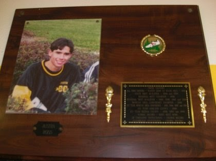
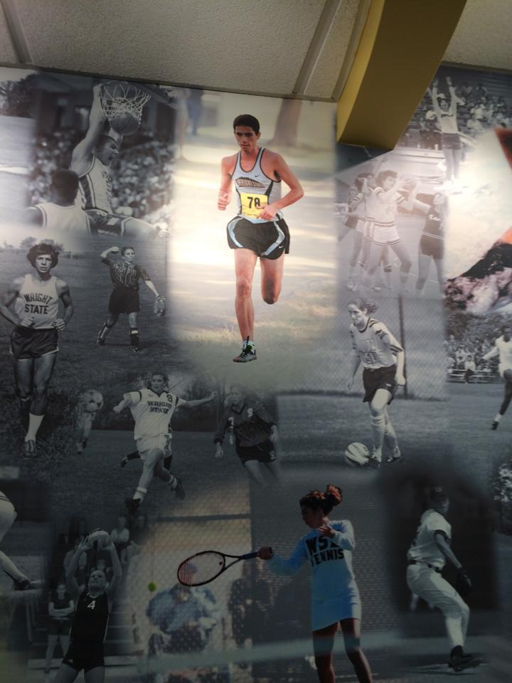
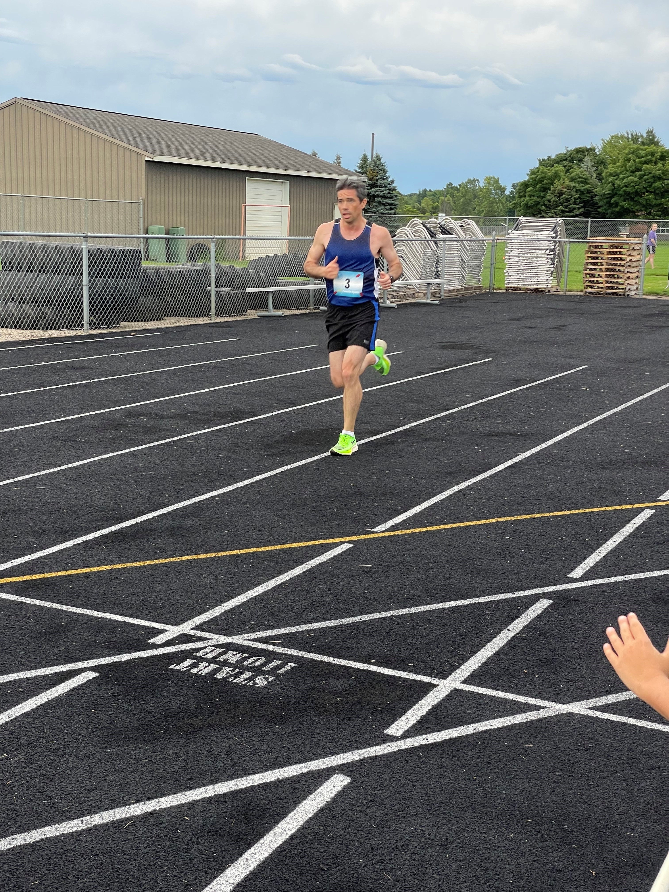

Black River High School, (1994-1999) Division II-III
Wright State University, (1999-2002) Division I NCAA
While now I only am a recreational runner, I’m very proud of my past accomplishments in competitive running. It was very important in shaping who I am today. Most of all, it taught me discipline, dedication, and leadership which have stayed with me now several years since my last competitive race. I am always interested in new running partners. Here are my favorite highlights from my racing career in both cross-country and track:

Elected Team captain all 4 years
3 fastest 5K’s in Black River history (as of 1999): 16:291, 16:32, 16:35
All-State Senior Year (22nd at state meet).
State-Qualifier, 1996 & 1998
Conference Champ/MVP 1998, Runner-up 1996, 1997
Regional Champ, 1996
4 years all-conference and all-county
Won 19 races in high school career, including 8 my senior year.
Pictured Right: Athletic Hall of Fame est. 2000 (my brother was later inducted in 2005).
Best Times: 9:53 for 3200m, 4:32 for 1600m, 2:01 for 800m, 0:55 for 400m
State Qualifier, 3200m (1997), placed 15th.
Runner-up MVP 1999 Conference Championship (1st place 2mile, 2nd place mile, 3rd place 800, 4th place 2 mile relay).
Led team in points 1997-1999.

Best Times: 14:56 for 5K2, 25:29 for 5mile (8K), 32:46 for 10K
Team MVP: 2000-2002.
Raider Award: 1999
Ohio University Invitational Champion (2001)
Dayton Flyer’s Invitational Champion (2000, 2001), Meet Record Holder (2001)
All-Ohio, 2000 & 2001
2nd Team All-Horizon League, (1999-2001)
2022 Season Bests:
5K: 16:19 (Holland, MI)
15K: 54:30 (Cincinnati Heart Mini)
Half-Marathon: 1:16:43 (Carmel, IN)
Marathon: TBD, November (Indy Monumental)
